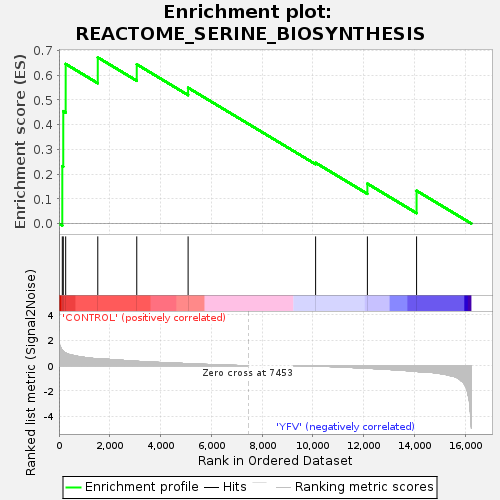
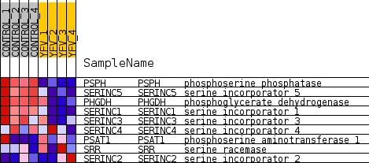
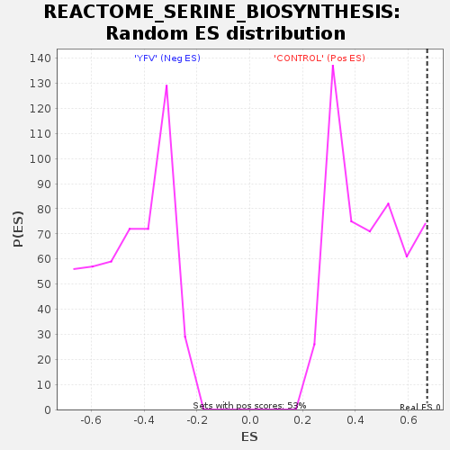

| Dataset | MATRIZ_GSE99081_collapsed_to_symbols.gsea_CLASE_99081.cls#CONTROL_versus_YFV |
| Phenotype | gsea_CLASE_99081.cls#CONTROL_versus_YFV |
| Upregulated in class | CONTROL |
| GeneSet | REACTOME_SERINE_BIOSYNTHESIS |
| Enrichment Score (ES) | 0.67187494 |
| Normalized Enrichment Score (NES) | 1.474373 |
| Nominal p-value | 0.08174905 |
| FDR q-value | 0.88062924 |
| FWER p-Value | 1.0 |

| SYMBOL | TITLE | RANK IN GENE LIST | RANK METRIC SCORE | RUNNING ES | CORE ENRICHMENT | |
|---|---|---|---|---|---|---|
| 1 | PSPH | phosphoserine phosphatase | 130 | 1.210 | 0.2322 | Yes |
| 2 | SERINC5 | serine incorporator 5 | 168 | 1.131 | 0.4544 | Yes |
| 3 | PHGDH | phosphoglycerate dehydrogenase | 263 | 0.991 | 0.6454 | Yes |
| 4 | SERINC1 | serine incorporator 1 | 1527 | 0.525 | 0.6719 | Yes |
| 5 | SERINC3 | serine incorporator 3 | 3062 | 0.335 | 0.6440 | No |
| 6 | SERINC4 | serine incorporator 4 | 5084 | 0.150 | 0.5492 | No |
| 7 | PSAT1 | phosphoserine aminotransferase 1 | 10105 | -0.030 | 0.2460 | No |
| 8 | SRR | serine racemase | 12144 | -0.207 | 0.1616 | No |
| 9 | SERINC2 | serine incorporator 2 | 14081 | -0.456 | 0.1330 | No |

